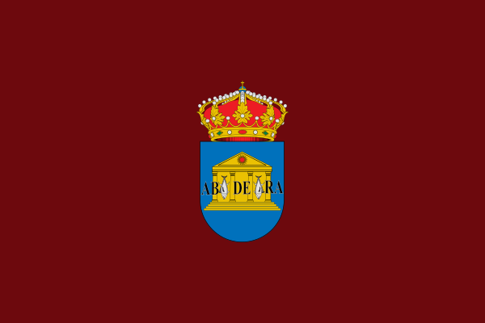

Adra es un municipio y localidad española de la provincia de Almería, en la comunidad autónoma de Andalucía, situado en la comarca del Poniente Almeriense, a 53 km de la capital provincial. Fundada como colonia fenicia, se trata de la ciudad más antigua de la provincia de Almería y cuarta ciudad más antigua de España. El término municipal de Adra es el que se sitúa más al suroeste de la provincia, limitando así con la provincia de Granada. Es la quinta ciudad más poblada de la provincia de Almería, con una población de 25.412 habitantes (2020)
A 31 de diciembre de 2019 contaba con una población de 25.148 habitantes, estando compuesta por 12.833 hombres y 12.315 mujeres.
Los datos de la pirámide de población de 2010 se pueden resumir así:
A nivel general cabe distinguir dos grandes unidades geográficas, integradoras de aspectos diferenciales naturales, paisajísticas y sociales. La zona montañosa corresponde al macizo costero de la Sierra de la Contraviesa, que en esta zona recibe el nombre de la Sierra del Calar, y alcanza los 976 metros de altitud (Las Cabañuelas). La zona del valle, donde se centra la vega del río Adra, y la zona más oriental forman parte de la Baja Alpujarra. Debido a esto, la orografía de Adra se caracteriza por la existencia de lomas y barrancos que se inician a nivel del mar en el vértice sureste del término y van aumentando su altitud hacia el norte y el oeste. La costa del territorio se extiende durante 13 kilómetros, por lo que cuenta con numerosas playas y en la zona más oriental cuenta con una serie de albuferas en el delta del río Adra, que constituyen la Reserva Natural de la Albufera de Adra.
Su situación costera y su latitud favorecen la existencia de inviernos templados y veranos calurosos, con temperaturas que no suelen superar los 38 grados centígrados.Integrado en la comarca Poniente Almeriense, se sitúa a 55 kilómetros de la capital provincial. El término municipal está atravesado por la autovía A-7, la carretera nacional N-340 entre los pK 378 y 397 y la carretera autonómica A-347 que permite la comunicación con Berja.